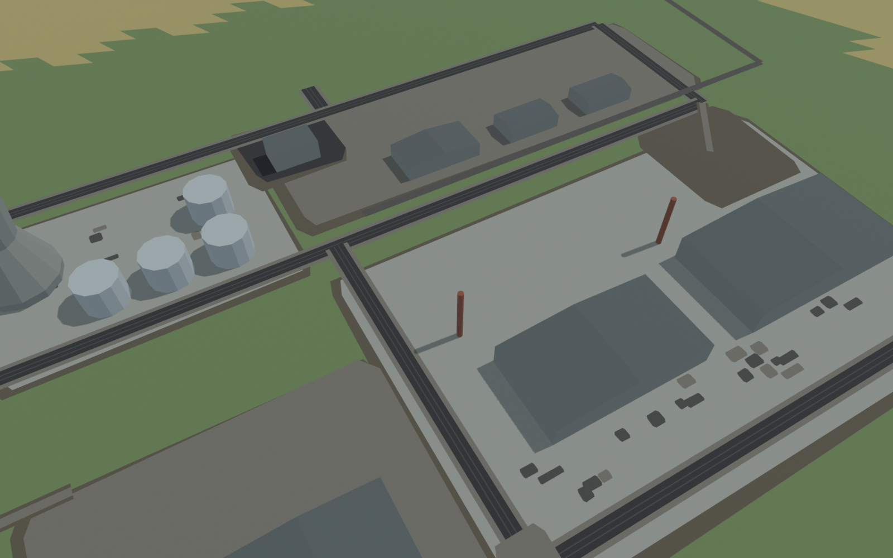
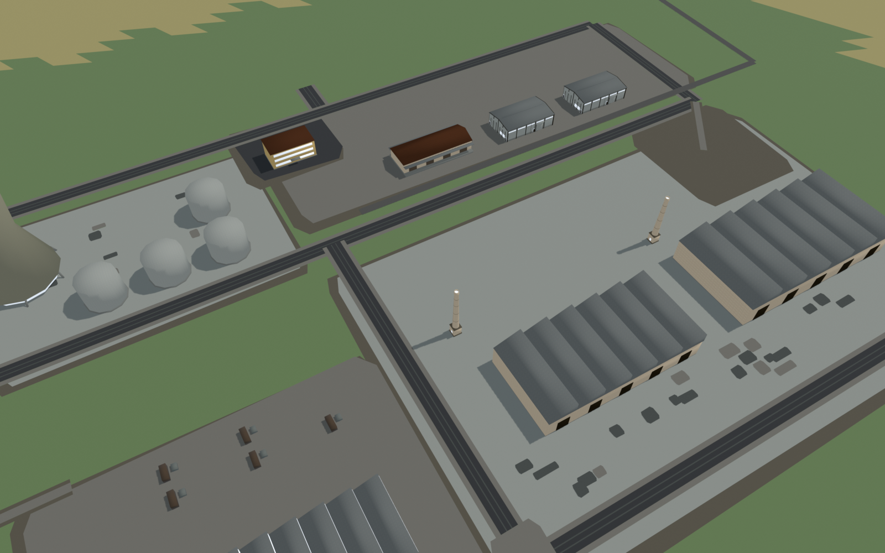
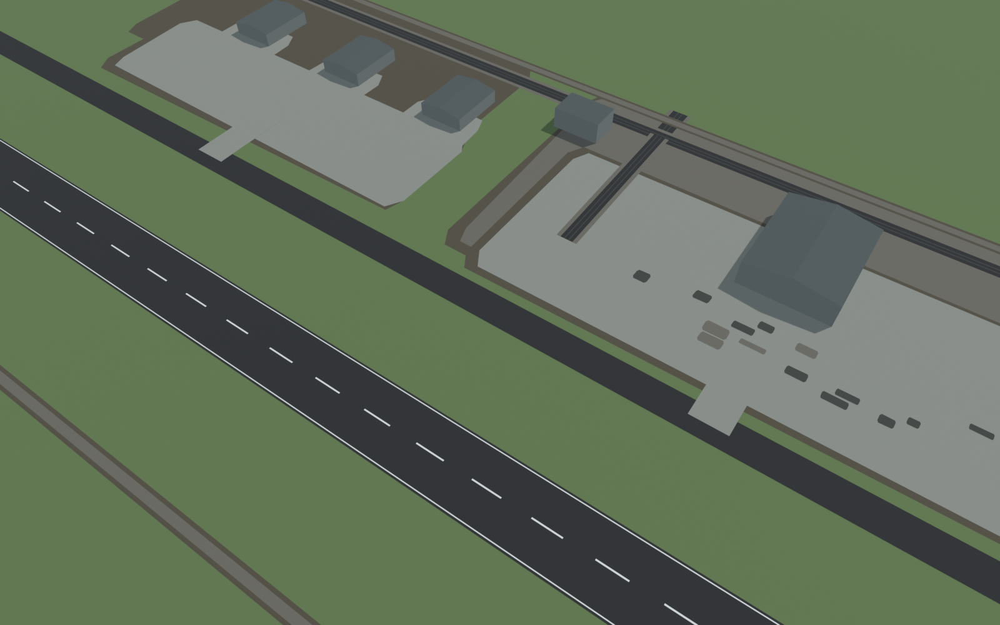
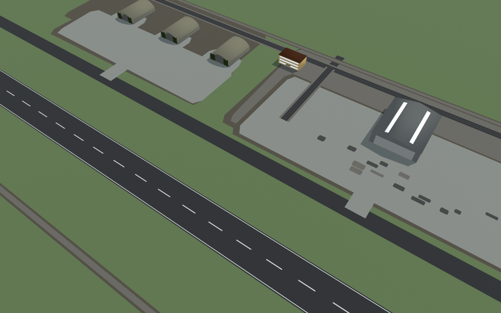
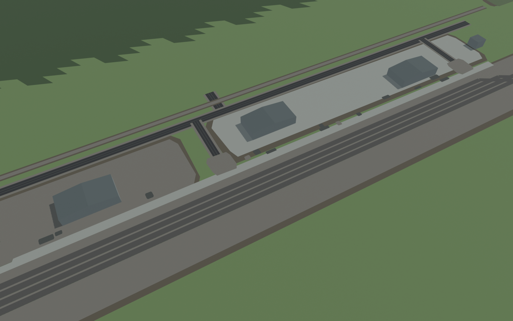
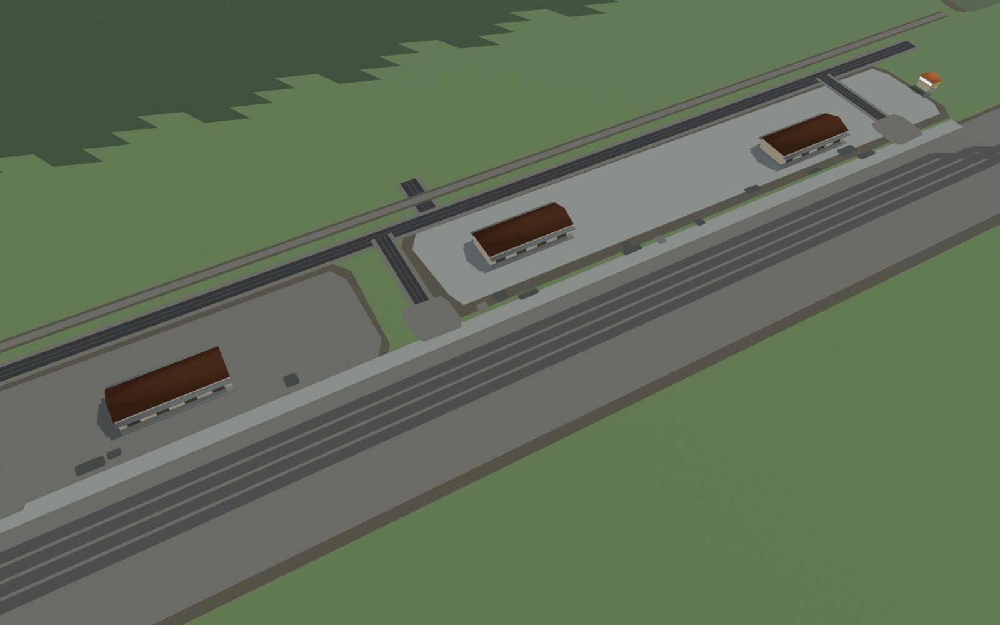
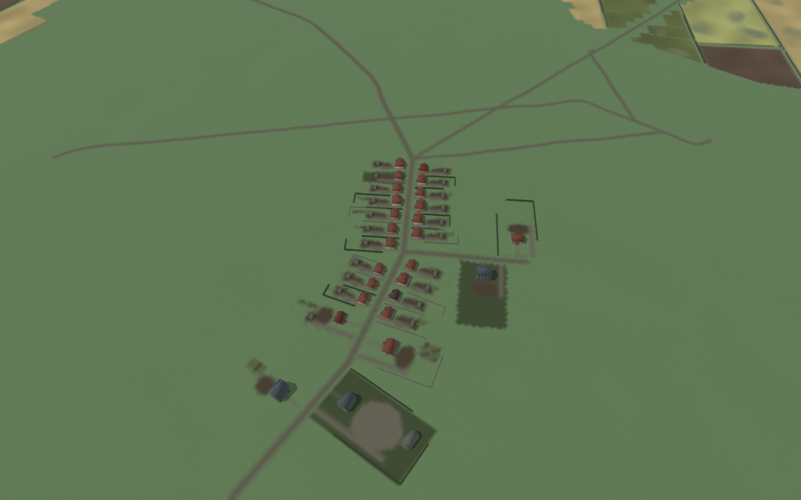
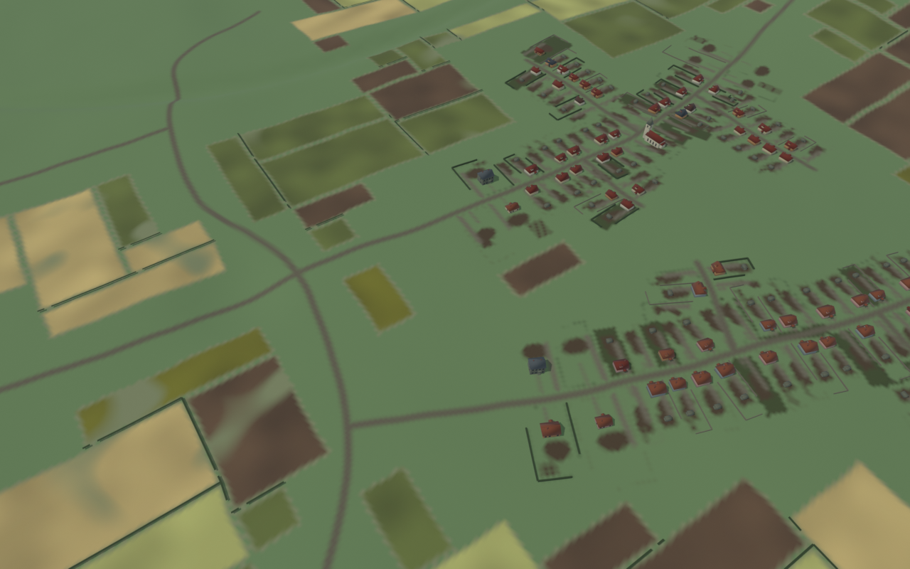
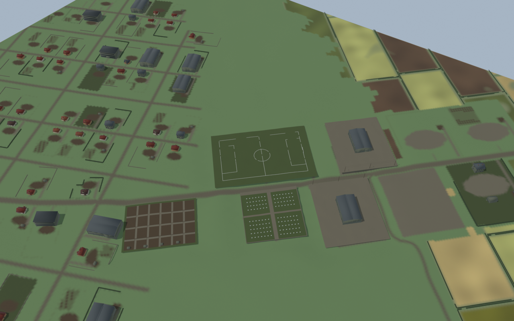

Blender geometry reviews using production layouts and existing FBXs. Landmark pairs use the same 300 m slant-range camera and unchanged yard surfaces. Settlement labels are camera altitude. These are not HDRP frames or GPU measurements. The coarse review terrain is lowered beneath accepted community surfaces to prevent tessellation intersections. Native culling, dither and terrain joins require Claude's Unity checks.








